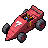

Soapbox Racing
Build a kart out of junk, race it, smash it into everyone else's, and keep it running. The race below is playable: your kart against five, bumper-car physics, three laps. Every bump wears your parts and theirs; a part worn to nothing breaks (the wheels go, the steering pulls, the engine coughs), and you fix it in the garage with the Tinkering parts you already salvage. Better parts turn up from the Junk King, Thrill Hill's stunt crates and the races themselves.
Race it
Three tracks. The two circuits are far bigger than the screen: the camera follows you and looks ahead the way you are going, and the minimap shows the rest. The Junkyard Run goes through a tunnel under the scrap heap where nobody can see you (or what you do to them); the Figure Eight crosses itself on a bridge, and karts on the deck and karts underneath never touch. Leave the road and the gravel slows you; past it is a fence. Click the track and drive. Bump people: a hard hit knocks them sideways and wears their parts; your bumper takes the first of it. Your kart is whatever is fitted in the garage below, worn parts and all, so change a part and race again to feel the difference.
↑/W go · ↓/S brake and reverse · ←→/AD steer · Space slide · Esc stop. Dark patches are oil (no grip); yellow chevrons are a boost.

Your kartin the garage Race log
Race logNothing yet. Start a race.
The garage
Five slots. Each part has stats, a rarity and a condition. Fit a part from your stash, repair one with scrap and gears (the Tinkering parts you already salvage), and tune the gearing. Everything here changes the kart you race above.
 Your stash
Your stashThe loop
A day's soapbox is a race or three, a few minutes in the garage, and the occasional lucky find. The kart improves slowly because good parts are rare and every one wears out.
Parts, wear and breaking
| Slot | What it does | Junk | Tuned | Racing | Legendary | When it breaks |
|---|
Rarity also sets toughness: Junk parts lose condition 40% faster than Tuned, Racing 15% slower, Legendary 30% slower. The numbers are a first pass; the race above uses exactly these.
Race modes
Real multiplayer, bumper cars and all
You asked for people to actually race each other, so this is the part that matters. The world server ticks every 50 ms and every map shares it: a race does not belong there. Each race gets its own small room (a separate Durable Object, one per race, like the game's maps but just for six karts):
Your calls
Nothing here is built in the game. The race on this page is a prototype of the feel, physics and wear, not the server's code.